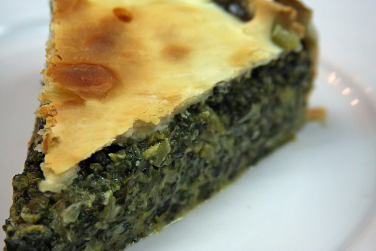

Tarta Pascualina

Descripción
Sigo en una etapa de nostalgia, compartiendo recetas de aquellos platos que formaron parte de mi niñez y fueron desde muy temprano un verdadero clásico en las fiestas de mi familia. Hoy les traigo una deliciosa Pascualina .
Esta tarta de origen genovés y tal como lo dice su nombre, se hacía en Italia para consumirse en época pascual, donde era tradición cristiana el no comer carne. Aquí en Argentina la adoptamos como un clásico local y la consumimos en todo momento, espero que ustedes también.
Ingredientes
- Acelga: 2 atados de 1 kg c/u
- Cebolla: 1 y 1/2 medianas
- Cebolla de Verdeo: 150 g
- Huevos: 5
- Caldo de Verduras: 1 cubito concentrado
- Queso Parmesano: 100 g
- Pan rallado: 2 cdas. grandes
- Manteca: 50 g
- Almidón de Maiz (Maizena): 1 cda. grande
- Leche: 200 ml
- Aceite de Oliva E.V.: c/n
- Nuez moscada rallada: una pizca
- Sal: a gusto
- Pimienta negra: a gusto
- Mostaza: 1 cda. grande
- Tapas para Tarta: 2
Preparación
- Separamos las hojas de las pencas o tallos más gruesos y lavamos ambas partes.
- Cortamos la cebolla en finos cubos y hacemos lo propio con la cebolla de verdeo separando la parte blanca de la verde.
- Sin secarlas, y agregando solo medio pocillo de agua, colocamos las hojas en una olla a fuego mínimo, las salamos y las tapamos por espacio de 10 minutos.
- A las pencas, que son mucho más duras, deberemos llevarlas a una olla con abundante agua y dejarlas hervir por espacio aproximado de 25 minutos hasta que estén bien tiernas.
- Una vez que estén listas las hojas, las llevamos a un colador o "chino" y las aplastamos bien con un pisapapa para quitarles toda el agua. Es importante deshidratar bien la verdura para que luego la Pascualina no nos quede aguachentada.
- Luego de quitarle bien el agua, procedemos a cortar la acelga lo más finito posible, pasando y repasando con el cuchillo. No se les ocurra ahorrar tiempo con una procesadora, porque solo obtendrán un puré.
- Cuando las pencas estén bien tiernas, las escurrimos bien y repetimos el proceso de corte...
- Unimos las hojas con las pencas cortadas y las llevamos nuevamente al colador. Verán que todavía hay mucha agua para quitar.
- En una sartén, salteamos la cebolla, junto con la parte blanca de la cebollita de verdeo, utilizando un poco de aceite de oliva extra virgen. Luego, sumamos un cubo de caldo de verduras y lo integramos bien.
- Una vez que la cebolla esté comenzando a tomar un color dorado, agregamos la parte verde de la cebolla de verdeo.
- Revolvemos y un minuto después apagamos el fuego.
- En un bowl colocamos la acelga y la cebolla. Agregamos un huevo y revolvemos hasta integrar.
- Ahora haremos una Salsa Blanca. Así que en una olla pequeña colocamos una cucharada grande bien colmada de almidón de maíz (Maizena) y la manteca.
- Llevamos a fuego medio y revolvemos con una cuchara de madera hasta que la manteca se derrita y ambos ingredientes se integren en su totalidad.
- Luego sumamos la leche y revolvemos hasta que la preparación tome consistencia.
- Finalmente sazonamos con sal, ralladura de nuez moscada y pimienta negra.
- Vertemos la salsa blanca en el bowl.
- Finalmente agregamos el pan rallado y las tres cuartas partes del queso parmesano rallado, reservándonos el resto para el armado final de la tarta. Revolvemos bien, dejamos enfriar la masa y luego la llevamos a la heladera. Es importante que el relleno esté bien frío cuando se coloque sobre la tapa.
Armado y cocción de la Tarta
- Enmantecamos y enharinamos un molde que tenga aro desmontable. Este era bastante pequeño - de aprox. 22 cmts. -, por lo que la tarta me salió bien alta. Pero pueden hacerlo perfectamente con uno de diámetro más grande.
- Lo forramos con una tapa para tarta.
- Para que la tapa no se englobe al momento de cocinarse, la pinchamos bien con un tenedor en todas sus partes.
- Ahora, un secreto para que el relleno no humedezca la tapa e impida su cocción. Vamos a pintarla pon un poco de mostaza y le pondremos parte del queso rallado que habíamos reservado.
- Ahora si sumamos el relleno, que recuerden debe estar bien frío.
- Hacemos 4 hoyos con la cuchara para poner cuatro huevos duros. O si no lo quieren tan cocidos pueden colocarlos crudos, como lo hice yo en esta oportunidad.
- Los tapamos con el resto del queso rallado.
- Colocamos la tapa superior la recortamos a la medida de nuestro molde y la unimos con la de abajo haciendo el repulgue.
- Finalmente, hacemos un pequeño corte en forma de cruz en el medio de la tarta, para que se puedan eliminar los vapores de la cocción y la llevamos a un horno precalentado a una temperatura moderada de 180° C por espacio de 45 minutos.
- Una vez que esté bien dorada la masa, la retiramos del horno y la dejamos enfriar.
- Cuando ya esté tibia, abrimos el aro y se lo quitamos.
- Les recomiendo llevar la tarta a la heladera para que se enfríe bien y tome consistencia.
Ahora solo nos resta cortar una buena porción y disfrutar de esta delicia...
Home